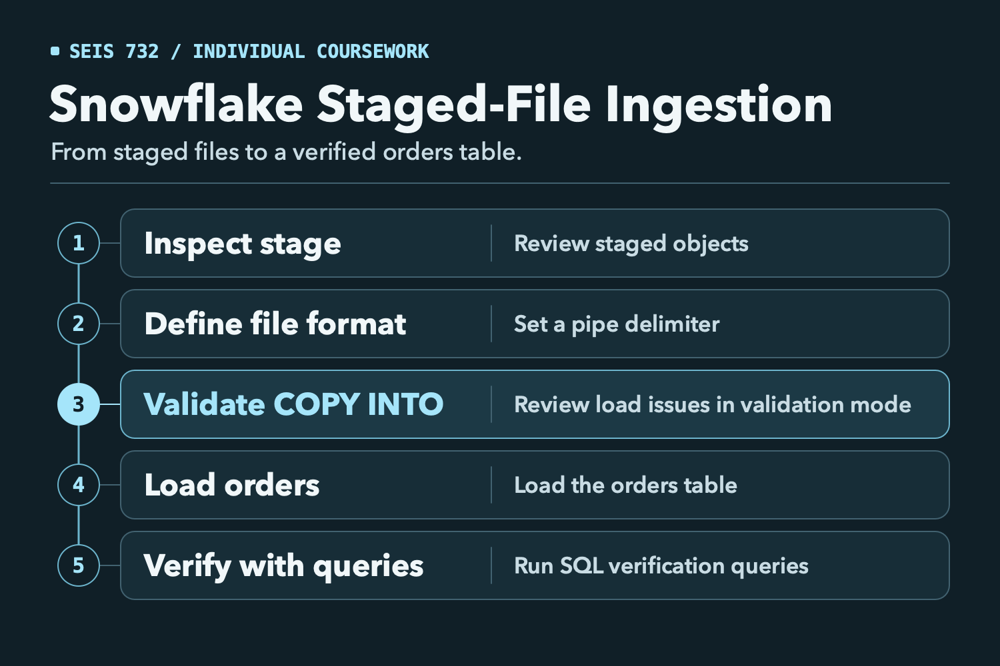

INDIVIDUAL COURSEWORK · Fall 2025 · SEIS 732 · Homework 5
Snowflake Staged-File Ingestion
I used Snowflake validation mode to inspect potential errors before loading pipe-delimited orders into a table.

Inspect and validate
I inspected staged objects and a bounded file sample, then defined a pipe-delimited file format. I used validation-mode COPY INTO to review potential load issues.
Load and verify
I loaded the orders table and ran SQL count and sample queries to check the loaded data and column mapping. This individual exercise covers one staged-file load and its verification.